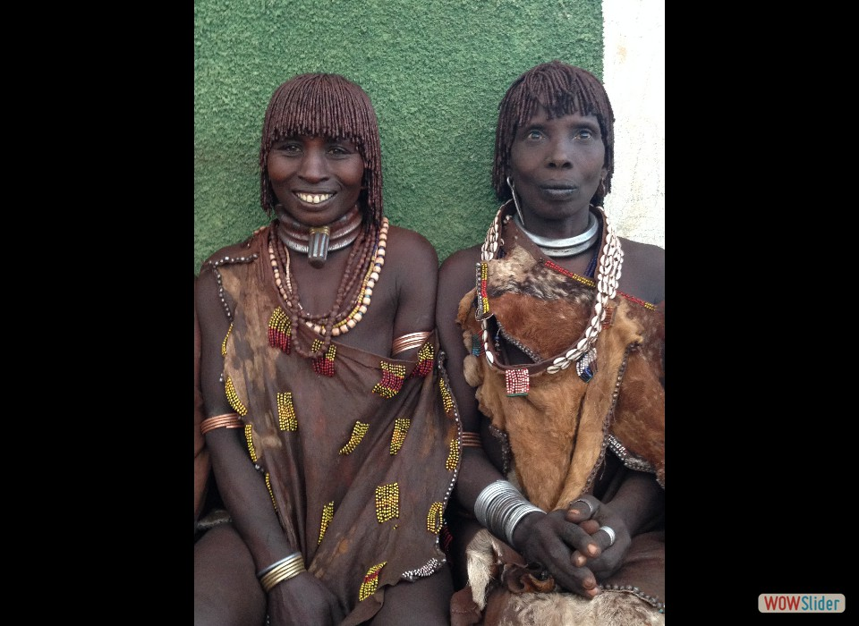
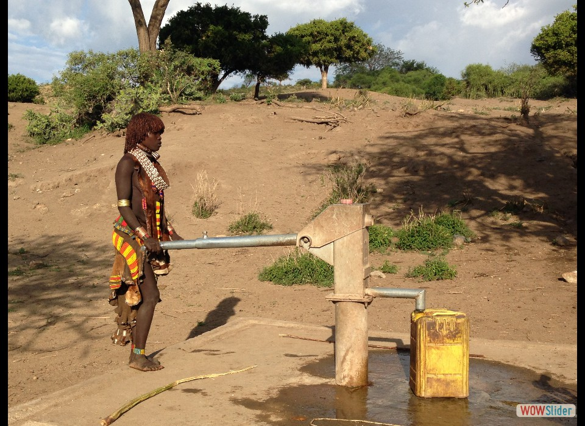
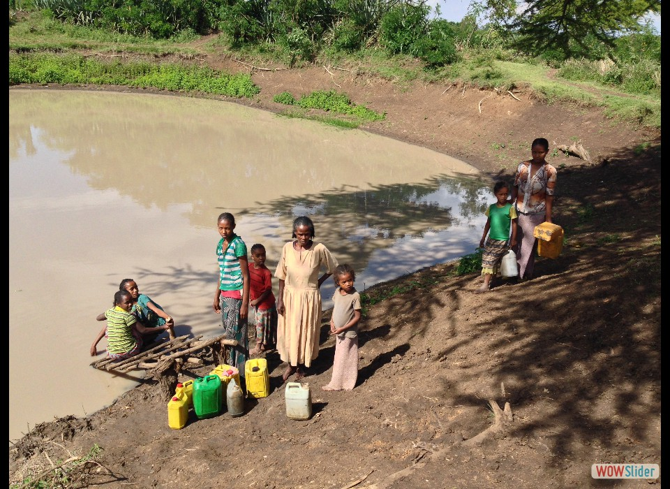
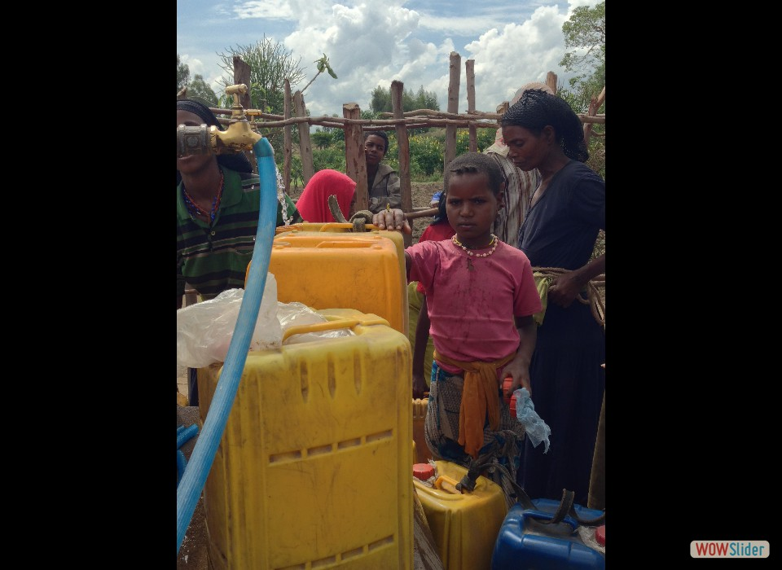
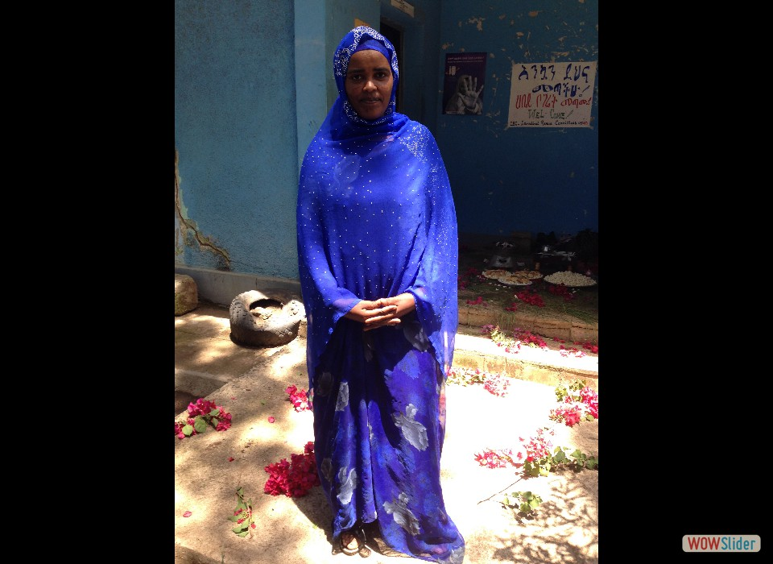
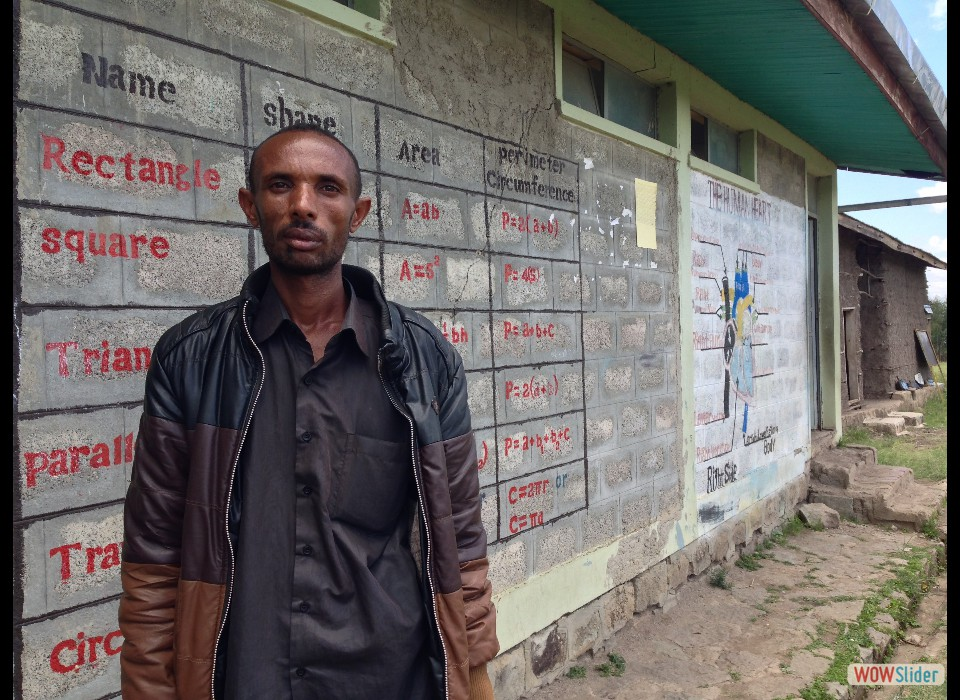
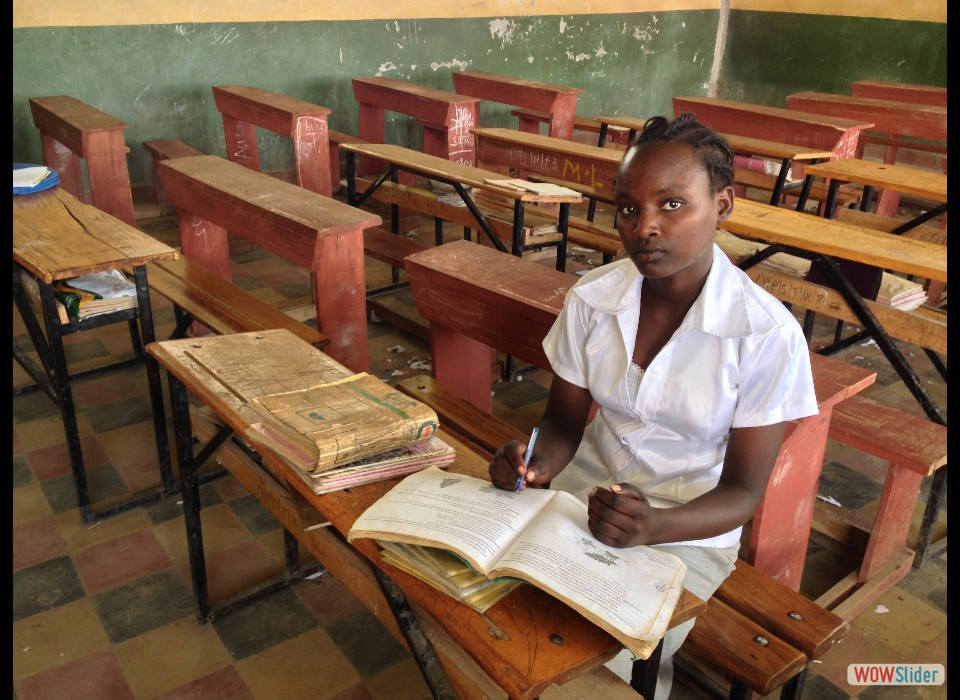

- Thanks to the agriculture program, Morshida is now one of the area’s premier honey producers. Her biggest accomplishment? Giving her children the opportunity to get an education. Photo credit: Carol Han, USAID/OFDA.
- USAID (OFDA) worked with Global Team for Local Initiatives to restore water points, like this well. Now, Hamar women no longer need to trek long distances to get water. Photo credit: Carol Han, USAID/OFDA.
- In Ethiopia, almost half the population doesn’t have access to clean drinking water. Women and girls have no choice but to gather it from ponds, rivers, and other “unsafe” sources. Photo credit: Carol Han, USAID/OFDA.
- USAID (OFDA) is partnering with the International Rescue Committee to repair broken water pumps, like this one. Now, more than 150,000 people in Dalocha have access to clean water. Photo credit: Carol Han, USAID/OFDA.
- Running the water operations in Dalocha is a committee made up solely of women, and run by this woman, Semira Assefa; such female leadership is rare in this mostly Muslim community. Photo credit: Carol Han, USAID/OFDA.
- Principal Elias Saramiso sees school attendance plummet during the dry season because students, mostly the girls, are out searching for water. “I always feel depressed during that month,” said Saramiso. Photo credit: Carol Han, USAID/OFDA.
- 8th grader Marta Dawit, who is at the top of her class, has been forced to miss school to get water for her family. But after USAID (OFDA) installed a water collection system at her school, she can pursue her dreams to be a teacher. Photo credit: Carol Han, USAID/OFDA.